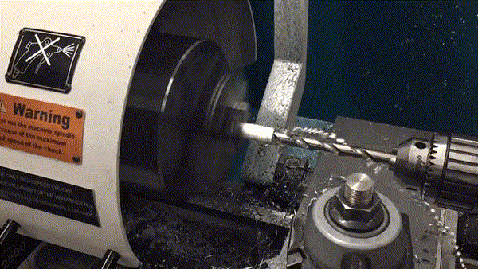

Stress Analysis: Crane Project

Objective
As part of my Stress Analysis class, my group and I were tasked with designing and building a mechanism powered by a servomotor which could lift a cylindrical weight. Our mechanism was fixed in a given starting position and had to pass through an obstacle as it moved towards the weight which placed constraints on its shape and size.
Additonally, we were required to keep our crane design under 20 ounces and left the weight a minimum of 2 inches. Our design competed in two categories: lifting the weight the highest or having the lightest crane to achieve the minimum lift of 2 inches.
Teammates
Design
At our first design review we assumed that the arm itself was massless.
This is neither practical nor possible; however, we chose to assume this because the center of mass of the arm was so close to the axis of rotation
-- thus the moment caused by the arm itself was negligible compared to the torque of the servo, the weight of the counterweight, and the force due to the weight.
Additionally, we assumed that the arm would lift a max of 60 degrees.
Although the servo was capable of rotating further, the change in x position of the counterweight as the arm increased in angle would cause the arm to no longer be able to lift the weight.
As a result, a 60% lift angle would be a safe assumption for the actual max lift angle.
Lastly, we assumed that the max torque by the servo was 57 oz-in as stated by the manufacturer.
After some prototyping, we discovered that we weren't getting anywhere near that torque despite that was what the manufacturer rated the servo for.
We suspect that this is due to the fact that these servos were reused for several years.
Manufacturing
After coming up with our design and running simulations, we took our materials into the shop and began working. The main body of our crane was constructed out of aluminum cylinders. We used rods rather than rectangular extrusion to resist torsion while still preventing buckling and bending. Additionally, we minimized weight and material use by hollowing out our 1 inch aluminum stock on the lathe.

Design Review 1
We were essentially achieving 2 inches of height up until the night before the first design review.
The main source of error that we encountered was the fact that the servo we were using was not consistent.
Not only did we see different capabilities between different controllers, but also when we began the design review, we realized that the servo was performing at a reduced level compared to the night before.
Our suspicions were confirmed when we switched servos and our crane performed better.
There was also a slight source of error due to the assumption that the arm was massless as the arm in practice was not.
The actual output of our crane was much worse than the calculations that we did to find our theoretical servo torque as well as our theoretical lift height.
Initially we calculated that using a counterweight that had its center of mass six inches from the axis of rotation would provide plenty of torque to allow for the servo to easily lift the weight.
Unfortunately, when we placed our design on the field, we quickly found that the arm could barely lift the weight and that the crane was nowhere near the 2 inches that we needed to achieve.

Final Design
After the first design review, we added a 45 degree bend in the lever arm and improved our counterweight so it would no longer hit our crane arm.
Additionally, we milled a smaller base that allowed for more adjustability when it came to iterating for our final version.
Our final crane design was extremely adjustable in terms of rotation as well as adjusting our servo mount to get the arm to interact with the weight at the correct angle.
Hollowed rods allowed for us to minimize weight without sacrificing structural integrity, especially in respect to bending.
The tension strips that were used were instrumental in preventing further bending as it prevented bending for the first 60% of the crane arm length.
The angled arm allowed for the weight to be lifted at a larger distance from the servo. It also allowed the counterweight to not overpower the servo at the beginning, but apply enough counter torque for the arm to lift the weight completely.
In the end, our design lifted the weight a height of 4.875 inches, which was the second highest in the class.